Matrix ODE Example
Back to ODE Solver Toolbox Contents.
Contents
Problem Statement
Consider the Riccati differential equation for the finite-horizon linear quadratic regulator problem:
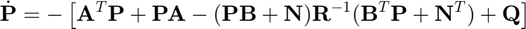
Find 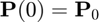 given that
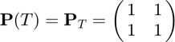
where 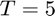. The state (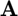) and input (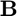) matrices are
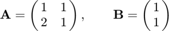
The cross-coupling (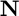), state (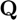), and input (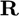) weighting matrices are
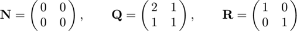
Matrices
% state matrix A = [1 1; 2 1]; % input matrix B = [1; 1]; % cross-coupling weighting matrix N = [0 0; 0 0]; % state weighting matrix Q = [2 1; 1 1]; % input weighting matrix R = [1 0; 0 1];
Final Condition
% final condition PT = [1 1; 1 1]; % final time T = 5;
odefun_mat2vec
Defining the Riccati differential equation (a matrix-valued ODE),
F = @(t,P) -(A.'*P+P*A-(P*B+N)/R*(B.'*P+N.')+Q);
Converting this matrix-valued ODE to a vector-valued ODE,
f = odefun_mat2vec(F);
Note that since 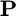 is a square matrix, we did not have to specify its number of rows for the odefun_mat2vec function.
odeIC_mat2vec
In this case, we have a final condition at time 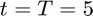, and want to find the initial condition at time 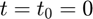. To do this, we will integrate backwards using an ODE solver, so the final condition 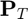 will actually form the initial condition. Therefore, finding the final condition for the corresponding vector-valued ODE,
yT = odeIC_mat2vec(PT);
Note that since is a square matrix, we did not have to specify its number of rows for the odeIC_mat2vec function.
odesol_vec2mat
First, let's solve the vector-valued ODE for 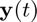. Solving the ODE from 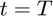 to 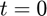,
[t,y] = ode45(f,[T,0],yT);
Transforming the solution matrix (y) for the vector-valued ODE into the solution array (P) for the matrix-valued ODE,
P = odesol_vec2mat(y);
Note that since is a square matrix, we did not have to specify its number of rows for the odesol_vec2mat function.
Solution for
Our original goal was to find . Extracting this matrix from the solution array (noting that the solution corresponding to will be stored at the end of the solution array since we integrated backwards in time), we find
P0 = P(:,:,end)
P0 =
1.2925 0.5483
0.5483 0.8169
References
This example is adapted from the following sources: